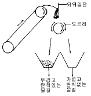
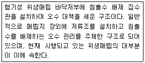
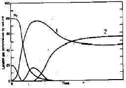

1과목: 폐기물 개론
1. 쓰레기를 소각한 후 남은 재의 중량은 소각전 쓰레기 중량의 약 1/3이다. 재의 밀도가 2.5t/m3이고, 재의 용적이 3.3m3쯤 될때 원래 쓰레기의 중량은?
2. 500세대, 세대당 평균 가족수 4인인 아파트에서 배출하는 쓰레기를 2일마다 수거하는데 적재용량 8.0m3의 트럭 5대가 소요된다. 쓰레기 단위용적당 중량 140kg/m3이라면 1인 1일당 쓰레기 배출량은?
3. 고형분이 20%인 폐기물 12톤을 건조시켜 함수율이 40%가 되도록 하였다. 이때의 무게 감량은? (단, 비중은 1.0 기준)
4. 슬러지를 처리하기 위하여 생슬러지를 분석한 결과 수분은 95%, 고형물중 휘발성 고형물은 70%, 휘발성 고형물의 비중은 1.1, 무기성 고형물의 비중은 2.2였다. 생슬러지의 비중은?
5. 다음은 pipe line(관로수송)에 의한 폐기물 수송에 대한 설명이다. 옳지 않은 것은?
6. 지정폐기물인 폐석면의 입도를 분석한 결과에 의하면 입도누적 곡선상 최소입경으로 부터의 10%가 입경 3mm, 20%가 입경 5mm, 60%가 9mm 그리고 90%가 10mm 이었다. 이의 균등계수는?
7. 30만 인구의 도시쓰레기량이 년간 40만톤이고 수거 인부가 하루 500명이 동원되었다면 MHT는? (단, 1일 작업시간은 8시간, 연간 300일 근무한다.)
8. 채취한 쓰레기시료에 대한 분석절차를 가장 바르게 나타낸 것은?
9. 전단형 파쇄기에 관한 설명과 가장 거리가 먼 것은?
10. 스크린 선별에 관한 설명으로 알맞지 않는 것은?
11. 고형물의 함량이 30%, 수분함량이 70%, 강열감량이 85%인 폐기물이 있다. 이 폐기물의 고형물중 유기물 함량은?
12. 자연상태의 쓰레기 밀도가 200㎏/m3 이었던 것을 적환장에 설치된 압축기에 넣어 압축시킨 결과 800㎏/m3 으로 증가하였다. 이때 부피의 감소율은?
13. 물질의 화학구조에 따른 활성탄 흡착정도에 대한 설명이 틀린 것은?
14. 유기물(포도당 C6H12O6) 1kg을 혐기성분해로 완전히 안정화시키는 경우 이론적으로 생성되는 메탄의 체적은? (단, 표준상태 기준)
15. 폐기물 중간처리기술로서의 압축은 부피감소가 주된 목적으로서 매립장의 수명을 연장시킬 수 있고 운반비의 절감 등을 꾀할 수 있다. 다음중 일반적으로 쓰이는 압축장치 중 저압력 압축기의 압력 강도 기준으로 적절한 것은?
16. X90=4.0 ㎝로 도시폐기물을 파쇄하고자 할 때, 즉 90%이상을 4.0 ㎝ 보다 작게 파쇄하고자 할 때 Rosin - Rammler모델에 의한 특성입자크기는? (단, n = 1로 가정 )
17. 폐기물 발생량 예측 방법이 아닌 것은?
18. 다음 그림은 어떠한 선별기를 나타낸 것인가?

19. 폐기물 성분을 분석한 결과 가연성물질이 무게로 30%의 비율을 가졌다. 밀도가 500kg/m3인 쓰레기 5m3가 가지는 가연성 물질의 양은?
20. 다음중 수거노선 설정시 틀린 것은?
2과목: 폐기물 처리 기술
21. 함수율 95% 분뇨의 유기탄소량이 TS의 35%, 총질소량은 TS의 10%이다. 이와 혼합할 함수율 20%인 볏짚의 유기탄 소량이 TS의 80%이고 총질소량이 TS의 4%라면 분뇨와 볏짚을 무게비 1:1로 혼합했을 때 C/N비는?
22. 슬러지 개량(conditioning) 방법과 거리가 먼 것은?
23. 폐기물 매립지의 매립구조를 분류하면 여러방법이 있다 아래의 설명에 해당하는 매립구조 방법은?

24. 반경이 2.5m인 trommel screen의 임계속도는?
25. 수분함량 95%(무게%)의 슬러지에 응집제를 소량 가해 농축시킨 결과 상등액과 침전 슬러지의 용적비가 3:5 이었다. 이 침전 슬러지의 함수율(%)은? (단, 응집제의 주입량은 소량이므로 무시한다. 농축전후 슬러지 비중은 1로 한다.)
26. 슬러지에 함유된 수분중 탈수가 가장 용이한 것은?
27. 어떤 도시의 폐기물중 불연성분 60%, 가연성분 40%이고, 이 지역의 폐기물 발생량은 1.2㎏/인.일이다. 인구 35,000명인 이 지역에서 불연성분 70%, 가연성분 80%을 회수하여 이 중 가연성분으로 RDF를 생산하려한다면 RDF의 연간 생산량은?
28. 용매추출처리에 이용 가능성이 높은 유해폐기물의 특성과 가장 거리가 먼 것은?
29. 해안매립공법인 순차투입방법에 대한 설명으로 알맞지 않는 것은?
30. 매립지의 침출수의 특성이 COD/TOC=2.5, BOD/COD=0.3 이라면 효율성이 가장 양호한 처리공정은? (단, 매립연한은 5년정도이며 COD는 5000mg/L이다)
31. 어느수역에 유출된 유해물질이 초기농도의 절반이 될 때까지 소요되는 시간이 1,000시간이었다면 이때 유해물질의 1차 감소 속도상수는?
32. 슬러지 고형화 방법중 시멘트기초법에 관한 설명으로 적절치 못한 것은?
33. 토양의 현장처리기법인 진공추출법의 주요인자와 가장 거리가 먼 것은?
34. 매립지에 쓰이는 합성차수막 재료별 장단점에 관한 설명으로 알맞지 않는 것은?
35. 다음 그림은 쓰레기 매립지에서 발생되는 가스의 성상이 시간에 따라 변하는 과정을 보이고 있다. 곡선①과 ②가 나타내는 가스의 종류로 맞게 된 것은?

36. 점토가 매립지의 차수막으로 적합하기 위한 기준으로 알맞는 것은?
37. 혐기성 소화단계를 가스분해단계, 산생성단계, 메탄생성 단계로 나눌 때 산생성단계에서 생성되는 물질과 가장 거리가 먼 것은?
38. 1일 쓰레기의 발생량이 50톤인 지역에서 트렌치 방식으로 매립장을 계획한다면 1년간 필요한 토지 면적은? (단, 도랑의 깊이는 5m이고 쓰레기의 압축율은 60%, 밀도는 400㎏/m3이다. 기타조건은 고려않함 )
39. 연직차수막 시설에 관한 내용중 알맞지 않은 것은?
40. 함수율이 96%이고 고형물질중 휘발분이 50%인 슬러지 500m3를 혐기성소화하여 함수율 90%의 소화슬러지가 얻어졌다면 이때 소화슬러지의 발생량은? (단, 소화전후 슬러지의 비중은 1이고 소화과정에서 생슬러지의 휘발분은 50%가 분해됨)
3과목: 폐기물 소각 및 열회수
41. 탄소(C) 3Kg을 완전 연소시킨다면 산소가 몇 Nm3 필요한가?
42. 미분탄 연소에 관한 기술이다. 틀린 것은?
43. 열교환기중 굴뚝에 설치되며 보일러 전열면을 통과한 연소가스의 열로 보일러 급수를 예열하여 보일러의 효율을 높이는 장치로 그 부수효과로는 급수예열에 의해 보일러수와의 온도차가 줄어들어 보일러 드럼에 발생하는 열응력이 경감되는 것은?
44. 증기터어빈 분류관점이 증기작동방식인 경우의 터어빈 형식으로 가장 알맞는 것은?
45. 다음중 분해연소에 대한 설명으로 가장 알맞는 것은?
46. 5%의 황을 포함하는 중유를 공기비 1.7로 완전연소시킬 때 습윤연소배기가스중의 SO2의 농도(ppm)는? (단, 폐기물의 저위발열량은 3,700 kcal/kg, Rosin근사식 적용)
47. 열분해에 대한 설명중 잘못된 것은?
48. 열분해장치의 종류와 가장 거리가 먼 것은?
49. 폐기물 소각공정에서 발생하는 소각재 중 비산재(FlyAsh)의 안정화 처리기술과 가장 거리가 먼 것은?
50. 맹독성 물질을 함유하고 있는 폐PCB, 폐농약 PCDD등을 주로 소각시키기 위하여 개발된 소각로는?
51. 폐기물 소각로의 종류중에서 유동상식(Fluidized BedType) 방식의 장점이 아닌 것은?
52. 도시쓰레기 소각로를 설계하고자 한다. 다음 자료를 이용하여 소각로의 화격자면적을 구하면?(단, 쓰레기 소각량:100ton/day, 쓰레기삼성분:수분-50%, 휘발분-40%, 회분-10% 화상부하율:300㎏/m2· hr, 하루가동시간:12hr)
53. 다단로 방식소각로의 특징에 대한 설명과 가장 거리가 먼 것은?
54. 평균 발열량이 8,000kcal/㎏인 P시의 폐기물을 소각하여, 그 지역 난방에 필요한 열에너지를 얻고자 한다. 이 때 지역난방에 필요한 난방수를 하루에 600ton 얻기 위하여 필요한 폐기물의 양(㎏/d)은? (단, 난방보일러의 효율은 65%, 보일러 급수온도는 12℃ 보일러출구 수온도 92℃, 물의 비열은 1.0 kcal/㎏℃이다)
55. 탄소 80 %, 수소 10 %, 산소 8 %, 황 2 %로 조성된 중유의 연소에 필요한 이론 공기량(AO)은?
56. 저발열량이 3500kcal/Sm3이고, 이론습연소가스량이 10Sm3/Sm3 인 연료의 이론연소 온도는? (단, 가스의 비열은 0.35kcal/Sm3 ℃ 이다. 공급공기온도는 15℃로 가정함)
57. 플라스틱연소 특징을 잘못 설명한 것은?
58. 스토카식 소각로의 열부하가 45,000Kcal/m3.hr 이며, 폐기물의 저위발열량이 600Kcal/kg일 때 소각로의 부피는? (단, 폐기물의 소각량은 1일 12톤이며, 소각로 가동시간은 1일 8시간 가동기준이다 )
59. 발열계에서 얻어진 중유의 고위발열량이 3000kcal/kg이었다면 소각로 설계에 사용되는 발열량은? (단, 중유중 수소함량 5%, 수분함량 60% 이었다. )
60. 중유 300kg/hr를 과잉공기계수 1.2로 연소시킬 때 연소실의 공기온도를 420℃로 올리면 열발생율은 상온공기(20℃)의 경우보다 몇% 정도 증가하는가? (단, 중유의 저위발열량: 10,000kcal/kg, 이론공기량:10Sm3/kg, 공기의 평균비열: 0.31 kcal/Sm3 ℃)
4과목: 폐기물 공정시험기준(방법)
61. 흡광광도법에 의하여 시안을 분석할 경우, 간섭물질의 제거방법 중 옳지 않은 것은?
62. 수산화나트륨(NaOH) 40%(무게기준) 용액을 조제한 후 이 중 100g을 취하여 다시 물에 녹여 2000㎖로 하였다. 이 용액은 몇 수산화나트륨(NaOH) N농도인가? (단, Na원자량: 23)
63. 폐기물이 적재되어 있는 5톤 미만의 차량에서 시료를 채취할 경우에 시료 채취 갯수에 대하여 맞는 것은?
64. 수은분석 시험에서 시료중 벤젠, 아세톤등 휘발성 유기물질은 253.7m에서 흡광도를 나타낸다. 이때 어떻게 처리하여야 하는가?
65. 일반적으로 사용되는 흡광광도 분석장치에 대한 설명으로 적합하지 않은 것은?
66. 가스크로마토그래피법에서 일반적으로 5-30분 정도에서 측정하는 피이크의 유지시간은 반복시험을 할 때 몇 % 오차 범위 이내이어야 하는가?
67. 가스크로마토그래피 장치의 분리관 충전 물질에는 흡착형 충전물질과 분배형 충전물질이 있다. 다음중 분배형 충전물질의 담체로써 알맞는 것은?
68. 반고상폐기물의 고형물 함량기준으로 가장 알맞는 것은?
69. 유기물함량이 비교적 높지 않고 금속의 수산화물, 산화물, 인산염 및 황화물을 함유하고 있는 시료에 적용되는 전처리 방법으로 적절한 것은?
70. 유기할로겐화합물, 니트로화합물 및 유기 금속화합물을 선택적으로 검출할 수 있는 가스크로마토그래피의 검출기는?
71. 유도결합 플라즈마 발광광도계의 장치의 설정조건에 관한 설명으로 알맞지 않는 것은?
72. 용출액 중의 PCBs 시험방법(가스크로마토그래프법)을 설명한 것으로 알맞지 않는 것은?
73. 폐기물의 강열감량 측정을 위한 가열 온도 및 시간은? (단, 시료를 탄화시킨후 )
74. 취급 또는 저장하는 동안에 이물이 들어가거나 또는 내용물이 손실되지 아니하도록 보호하는 용기는?
75. 국내 용출시험법의 용출조작에 대한 설명중 가장 적합한 것은?
76. 일반적으로 대상폐기물의 양이 5000ton 이상인 경우의 시료 최소 수는?
77. 다음은 폐기물 공정시험법상 항목별 시험방법을 연결한 것이다. 이중 잘못된 것은?
78. 흡광광도법에 의한 수은 측정시, 전처리된 시료에서 수은 의 분리추출을 위하여 사용되는 용액은?
79. 흡광광도계에서 광원으로 부터 나오는 빛의 50%를 흡수 하였다면 흡광도는?
80. CN의 전극법사용시 시료와 표준액의 온도차는 얼마이어야 하나?
5과목: 폐기물 관계 법규
81. 폐기물처리 담당자가 이수하여야 할 교육과정의 교육기간으로 알맞은 것은?
82. 지정폐기물의 분류번호'04-00-00'이 의미하는 것은?
83. 영업정지기간 중에 영업을 한 폐기물처리업자에게 부과되는 벌칙기준으로 적절한 것은?
84. 대통령이 정하는 폐기물처리시설을 설치, 운영하는 자는 당해 폐기물처리시설의 설치, 운영으로 인하여 주변지역에 미치는 영향을 몇년마다 조사하여 그 결과를 환경부장관에게 제출하여야 하는가?
85. 폐기물처리업자에게 영업정지에 갈음하여 처분할 수 있는 과징금의 최대액수는?
86. 폐기물처리시설을 설치,운영하는 자는 처리시설(소각시설)에서 배출되는 오염물질의 측정결과를 얼마동안 보존하여야 하는가?
87. 시장, 군수, 구청장이 관할구역안의 폐기물처리에 관한 기본계획 수립시 포함되어야 할 사항과 가장 거리가 먼것은?
88. 폐기물처리시설(매립시설 제외)을 폐쇄하고자 하는 자는 당해시설의 폐쇄 예정일 몇월 이전에 폐쇄신고서를 제출하여야 하는가?
89. 기술관리인을 두어야 할 폐기물처리시설에 대한 기준으로 알맞는 것은?
90. 대통령령이 정하는 '폐기물의 처리명령대상이 되는 조업 중단기간'은? (단, 동물성 잔재물 및 감염성폐기물중 조직물류 등 부패 변질의 우려가 있는 폐기물의 경우)
91. 폐기물의 수집, 운반, 보관시 종류별, 성상별로 재활용가능성 여부, 가연성 또는 불연성 여부등에 따라 구분하여 수집,운반,보관하여야 한다. 그 예외되는 경우로 알맞지 않는 것은?
92. 소각시설의 측정대상 오염물질인 다이옥신의 측정주기 기준으로 적절한 것은?(단, 시간당 처리능력이 2톤 이상인 소각시설인 경우)
93. 시· 도지사, 시장· 군수· 구청장 또는 지방환경관서의 장이 관계공무원으로 하여금 사업장 등에서 배출되는 폐기물 또는 재활용한 제품의 성분, 유해물질함유여부의 검사를 위한 시험분석을 의뢰할 수 있는 기관이 아닌 것은?
94. 폐기물처리업의 변경신고 사항과 가장 거리가 먼 것은?
95. 폐기물처리시설중 음식물류폐기물처리시설의 검사기관이 아닌 것은?
96. 지정폐기물인 유해물질함유 폐기물(환경부령이 정하는 물질을 함유한 것임)에 관한 설명으로 알맞지 않는 것은?
97. 사후관리 이행 보증금의 사전적립대상이 되는 '폐기물 매립시설의 규모기준'으로 가장 적합한 것은?
98. 폐기물의 중간처리시설중 열처리조합시설과 가장 거리가 먼 것은?
99. 감염성폐기물의 수집, 운반차량의 차체 도색은 어떤 색으로 하여야 하는가?
100. 다음의 폐기물처리시설중 중간처리시설인 기계적처리시설에 해당하는 것은?